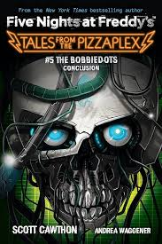

*The Bobbiedots Conclusion* é o quinto livro da série *Tales from the Pizzaplex*. A história dá continuidade aos eventos envolvendo os misteriosos *Bobbiedots*, robôs domésticos inteligentes que operam no Pizzaplex. Quando um novo erro surge no sistema, o caos ameaça todos os visitantes.
O protagonista, que já havia enfrentado os *Bobbiedots*, descobre que as atualizações recentes nos robôs trouxeram um erro fatal. Ele precisa correr contra o tempo para consertar o sistema e evitar que a situação piore, enquanto descobre mais segredos obscuros sobre os criadores dos *Bobbiedots*.